In this tutorial we will use Waymark to create a Map with a single Marker.
You will be guided through how to install the plugin, create a Marker at a specific location and associate an Image and Description with it.
This tutorial assumes you have a WordPress site (self-hosted) and are logged in as an administrator.
This Map illustrates the end result. Try clicking on the Marker Icon to view the Image and description.
Click on any screenshot to enlarge.
1. Activating the Plugin
In this step we are going to search for, install and activate the Waymark plugin.
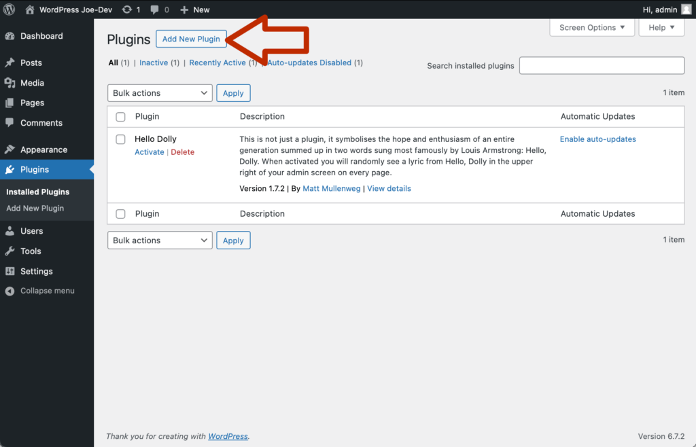
1.1 In the “Plugins” administration page click on the “Add New Plugin” button.
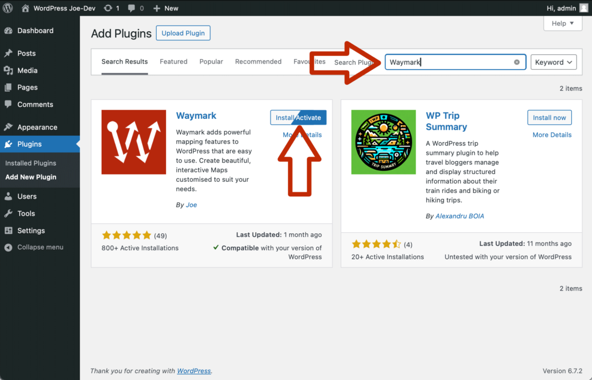
1.2 In the top right “Search Plugins” text field enter “Waymark”. Then click “Install Plugin” next to Waymark in the search results. Once installed, the button text will change to “Activate”. Click this to activate the plugin.
2. Creating a Map
Next we are going to create a new Map and give it a title.
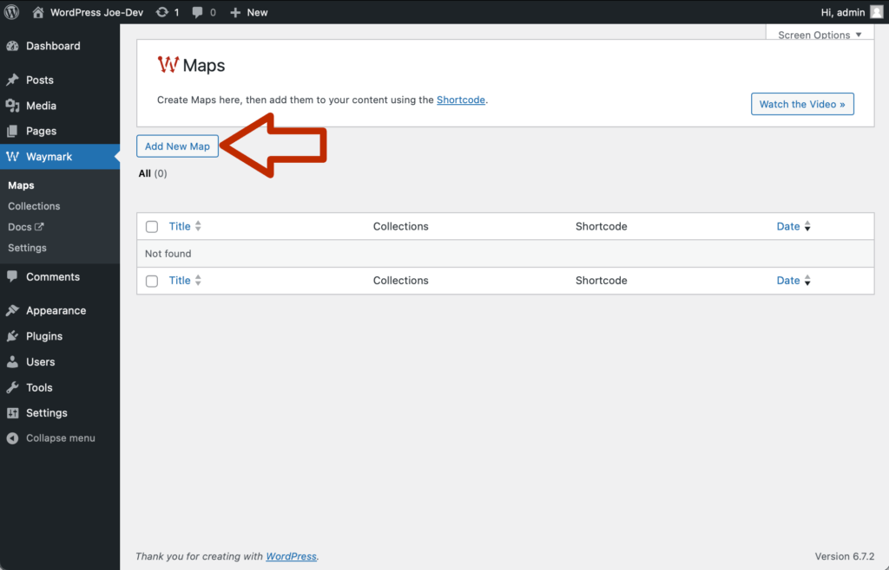
2.1 Once the plugin is activated you will be taken to the “Maps” page. This screen lists all of the Maps created, which is empty right now. Click “Add New Map”.
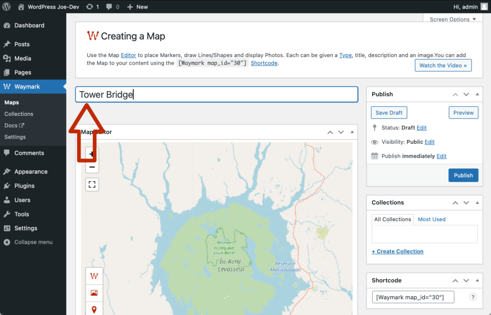
2.2 You will be taken to the Map edit screen. Give the Map the title “Tower Bridge” in the top “Add title” text field.
3. Adding a Marker
We will now search for a location and add a Marker there.
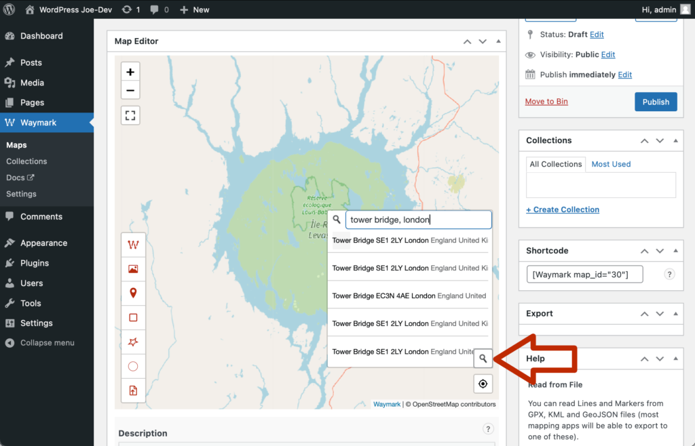
3.1 Scroll down to the Map and click on the search icon (magnifying glass) to the bottom right of the Map. Enter “Tower Bridge, London” into the search text field and hit return/enter to submit the search. A list of locations will appear, click on the top result.
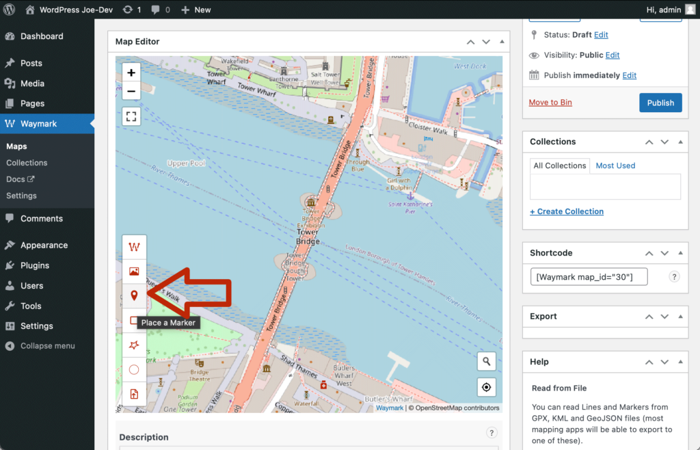
3.2 The Map should now be centred on Tower Bridge as in the screenshot (if it isn’t try some of the other search results, but anywhere is fine for this tutorial). Click the Marker icon (the third icon) on the Toolbar to the left of the Map to add a Marker.
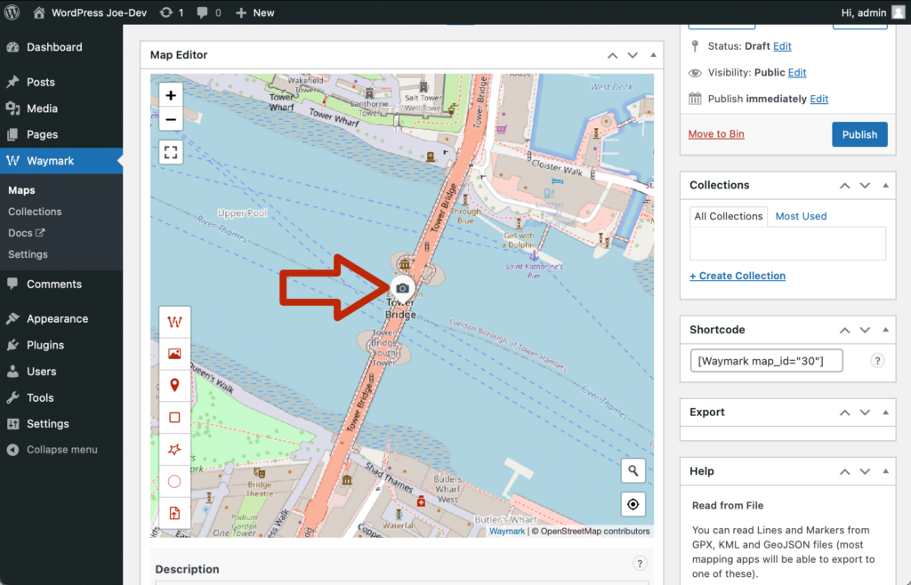
3.3 This will add a Marker to the middle of the Map, on the bridge. Click on the newly added Marker to open the Overlay editor popup.
4. Adding an Image
With the Marker added we will now attach an image to it.
The image we will use first needs to be downloaded onto your computer. Click this link to download it from Wikimedia, the file is called “1024px-Tower_Bridge_at_Dawn.jpg”. We can use this image as long as we provide attribution, which we will do in the next step.
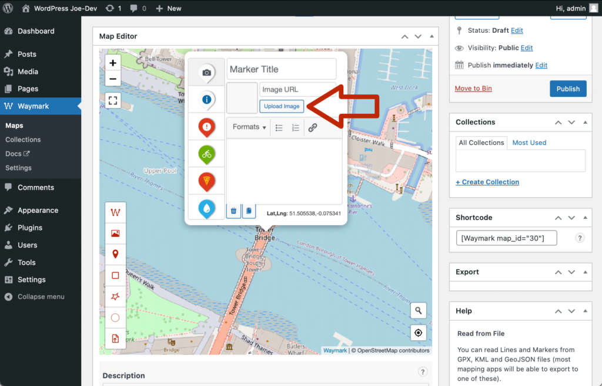
4.1 In the popup editor click the “Upload Image” button. This will open the standard WordPress Media Library dialog.
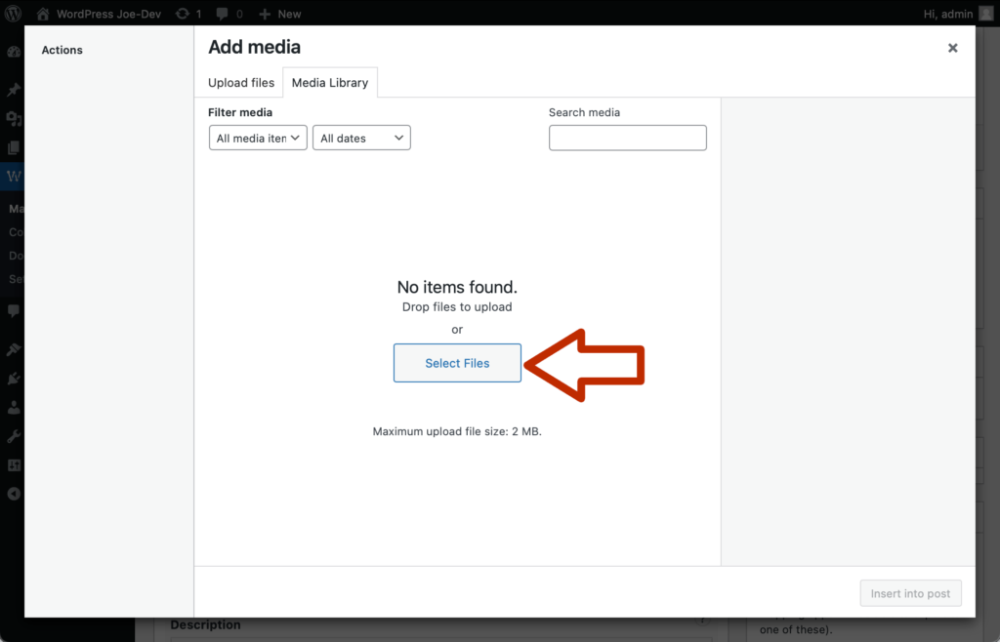
4.2 Click on the “Select Files” button to upload an Image.
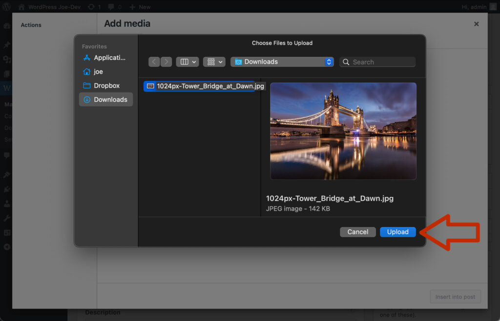
4.3 Locate the Tower Bridge image on your computer using the file browser and click “Upload”.
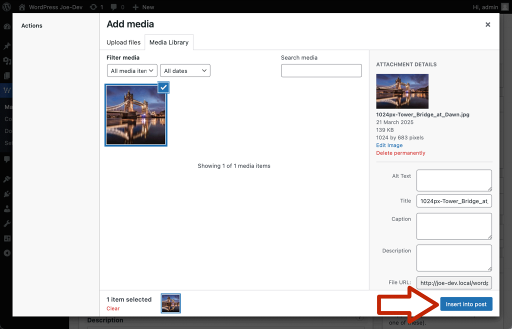
4.4 Once the image has finished uploading, you will see a thumbnail appear in the Media Library. Click on the “Insert into post” button.
5. Adding a Description
Let’s add the required attribution in the Marker description.
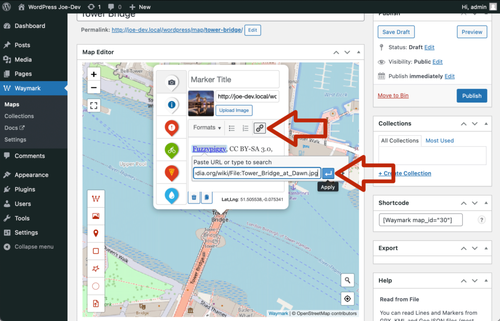
5.1 In the large text area, enter the provided attribution text. Highlight “Fuzzypiggy” and click on the link icon above the Description field. Add the appropriate link in the text field that appears. Repeat for the “CC BY-SA 3.0” text, adding the appropriate link.
{kind=link}
{kind=link}